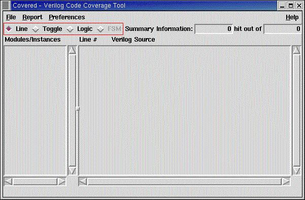

Figure 1. shows the location of the coverage type view bar. The bar is split up into the four main types of coverage metrics that Covered can provide: line, toggle, logic (combinational logic), and FSM (state and arc). When the Covered GUI is first invoked, the line coverage metric is the default mode. To view a different metric, simply left click on the button to the left of the metric name. Doing so will automatically deselect the old mode, set the selection indicator to the new mode and display the new metric information in the summary bar, module/instance listbox, and coverage file viewer window.
Please note that any metric which is displayed in grey is currently not selectable. This is due to a current lack of support for this metric viewing feature in the Covered GUI. It is the goal of this project to provide viewing support for all metrics that Covered supports in the textual coverage reports.
Figure 1. Covered Main Window Highlighting the Coverage Type View Bar
